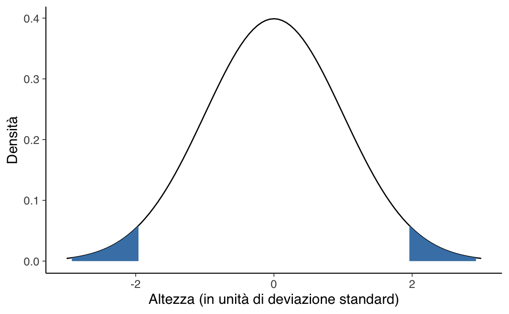

x <- c(173.53, 175.01, 165.19, 161.06, 173.77, 144.68, 174.06, 163.19, 163.09, 155.47, 165.11, 188.31, 170.95, 172.74, 157.49, 176.30, 155.86, 162.52, 179.95, 170.08)42 Inferenza sulle medie
Molto spesso in psicologia ci troviamo in una situazione in cui la variabile dipendente è a livello di scala ad intervalli o superiore e ciò che ci interessa è stabilire se il valore medio della variabile dipendente sia più grande in un gruppo o in un altro. Ad esempio, uno psicologo potrebbe voler sapere se i livelli di ansia sono più alti tra i genitori o tra i non genitori, o se la capacità della memoria di lavoro si riduce quando si ascolta musica, rispetto alla condizione in cui non si ascolta musica. In queste situazioni, la variabile dipendente è continua a livello di scala ad intervalli o a rapporti e il nostro predittore è una variabile binaria. In altre parole, ciò che vogliamo fare in situazioni di questo tipo è confrontare le medie dei due gruppi.
La risposta tradizionale al problema del confronto tra due medie è quella di usare il test statistico che va sotto il nome di \(t\) di Student, di cui esistono diverse varianti a seconda del tipo di domanda a cui si vuole rispondere. In questo capitolo presenteremo le diverse varianti del test \(t\) di Student: il test \(t\) a campione unico, il test \(t\) per campioni indipendenti e il test \(t\) per il confronto tra le medie di due campioni appaiati.
42.1 Modello Normale: varianza nota
In questa sezione inizieremo ad esaminare il test \(z\), il quale ci fornisce una versione semplificata del test \(t\) di Student, che probabilmente è in assoluto il test statistico più usato (più di una volta a sproposito) dall’approccio frequentista. Lo scopo di questa discussione è quello di presentare la logica che sta alla base della procedura di test di ipotesi frequentista. Il test \(z\) chiarisce questa logica esaminando il caso più semplice – un caso che, per motivi che saranno chiariti in seguito, non trova molte applicazioni pratiche. Lo presentiamo qui perché rende trasparente la motivazione frequentista della procedura di test di ipotesi. Gli altri test frequentisti, quelli che si usano nelle applicazioni concrete, sono semplicemente degli sviluppi dell’idea sulla quale si basa il test \(z\). Per cui, se si capisce il test \(z\), si capiscono tutti i test frequentisti.
Il test \(z\) applica la procedura di test di ipotesi statistiche che è stata presentata nel capitolo precedente e si pone il problema di verificare un’ipotesi a proposito della media della popolazione utilizzando la media campionaria quale statistica test. In precedenza abbiamo discusso un teorema della teoria della probabilità il quale afferma che la media \(\bar{X}_n\) di \(n\) variabili aleatorie i.i.d., ciascuna distribuita come \(\mathcal{N}(\mu, \sigma^2)\), segue una distribuzione normale con parametri \(\mu_{\bar{X}_n} = \mu\) e \(\sigma^2_{\,\bar{X}_n} = \sigma^2 / n\). Questo significa che, conoscendo i parametri (media e deviazione standard) della popolazione di origine, è possibile specificare completamente la distribuzione campionaria di \(\bar{X}_n\).
Ovviamente il valore dei parametri è ignoto, ma è qui che interviene la procedura di test di ipotesi. In base all’approccio NHST, la distribuzione campionaria della statistica test viene costruita assumendo come vera l’ipotesi nulla. Il test \(z\) – e lo stesso approccio viene seguito per tutti gli altri test di stampo frequentista – determina la distribuzione campionaria della statistica test (per esempio, la media del campione quale stimatore della media della popolazione) ipotizzando che il campione osservato provenga da una popolazione in cui l’ipotesi nulla è vera. La domanda di come determinare i valori dei parametri incogniti della popolazione trova quindi una facile risposta: il valore di tali parametri è fornito da \(H_0\)!
42.1.1 Un test bilaterale
Per vedere come come si esegue il test \(z\), consideriamo il seguente esempio. I valori antropometrici medi della popolazione italiana adulta sono stati descritti, per esempio, da un’indagine nazionale condotta da Briziarelli et al. (1994). Ci concentriamo qui sull’altezza media delle donne adulte, la quale risulta essere pari a 162.5 cm tra 18 e 24 anni, con una deviazione standard di 12 cm. Sappiamo anche che la variabile “altezza” segue la distribuzione normale. Per qualche ragione, sospettiamo che, a Firenze, l’altezza media sia diversa da quella a livello nazionale e, per gli scopi di questo esempio, crediamo che possa essere o maggiore o minore di quella italiana.
42.1.2 La statistica test
Per sottoporre a verifica la nostra ipotesi della ricerca, misuriamo l’altezza di 20 donne fiorentine scelte a caso. Supponiamo di avere ottenuto i seguenti risultati:
Calcoliamo la media del campione:
mean(x)
#> [1] 167.418La media campionaria è un po’ più grande della media della popolazione \(\mu = 162.5\) e questo suggerisce che, in effetti, le donne fiorentine potrebbero avere un altezza superiore alla media nazionale. Tuttavia, un campione di ampiezza \(n = 20\) è molto piccolo, per cui la diffrenza tra il risultato osservato e il valore atteso (\(\mu = 162.5\)) potrebbe essere soltano il prodotto del caso. Per verificare l’ipotesi, che l’altezza delle donne fiorentine sia diversa da quella delle altre donne italiane decidiamo di usare \(\bar{X}_{n}\) quale statistica test, ovvero quale stima di \(\mu\).
Per valutare la nostra ipotesi iniziamo ad elencare ciò che sappiamo. Chiamiamo \(X\) l’altezza delle donne fiorentine. In primo luogo, sappiamo che la media campionaria è \(\bar{X}_{n} = 167.418\). Se siamo disposti ad assumere che la distribuzione dell’altezza delle donne fiorentine ha la stessa deviazione standard dell’altezza delle altre donne della popolazione italiana, allora possiamo dire che la deviazione standard dell’altezza delle donne fiorentine è \(\sigma = 12\). Inoltre, sappiamo che i valori dell’altezza delle donne fiorentine sono distribuiti in maniera normale dato che, in generale, i valori dell’altezza seguono la legge della distribuzione normale.
Ora elenchiamo ciò che non sappiamo, ma che vorremmo sapere. La nostra ipotesi riguarda il valore incognito \(\mu\), ovvero la media dell’altezza della popolazione delle donne fiorentine – infatti, abbiamo misurato l’altezza di 20 donne fiorentine, non di tutte le donne fiorentine! La nostra ipotesi è \(X \sim \mathcal{N}(\mu \neq 162.5, \sigma = 12)\), con \(\mu\) sconosciuto. Dato che, nella procedura NHST, l’ipotesi del ricercatore definisce “l’ipotesi alternativa” \(H_1\), possiamo scrivere:
\[ H_1: X \sim \mathcal{N}(\mu \neq 162.5, \sigma = 12). \]
Una volta definita l’ipotesi alternativa risulta specificata anche l’ipotesi nulla, in quanto essa è l’ipotesi opposta e complementare a \(H_1\). Dunque possiamo scrivere:
\[ H_0: X \sim \mathcal{N}(\mu = 162.5, \sigma = 12). \]
Le ipotesi nulla e alternativa riguardano i parametri della popolazione. In questo particolare esempio, il paraemtro \(\mu\) (la media dell’altezza delle donne fiorentine) è incognito ma \(\sigma\) è noto (in quanto abbiamo assunto che l’altezza delle donne fiorentine e l’altezza delle donne italiane sono due Normali con la stessa deviazione standard ma con medie diverse). Per stimare \(\mu\) dobbiamo usare una qualche statistica test, e la statistica ovvia a questo riguardo è semplicemente la media del campione \(\bar{X}\). Decidiamo dunque di usare \(\bar{X}\) quale statistica test. Quello che dobbiamo ancora stabilire sono le caratteristiche della distribuzione campionaria di \(\bar{X}\) nel caso di campioni di ampiezza \(n=20\).
42.1.3 La distribuzione campionaria della statistica test
In base all’approccio NHST, la distribuzione campionaria della statistica test viene determinata assumendo come vera l’ipotesi nulla. Nel caso del nostro esempio, l’ipotesi nulla afferma che \(X \sim \mathcal{N}(\mu = 162.5, \sigma = 12)\). Sotto \(H_0\), dunque, la distribuzione campionaria della media di campioni di ampiezza \(n=20\) è:
\[ \bar{X} \sim \mathcal{N}\left(\mu_{\bar{X}} = \mu = 162.5, \sigma_{\bar{X}} = \frac{\sigma}{\sqrt{n}} = \frac{12}{\sqrt{20}}\right). \]
Si noti che è l’ipotesi nulla a specificare la media \(\mu\) e la deviazione standard \(\sigma\) della popolazione da cui vengono estatti i campioni che formano la distribuzione campionaria di \(\bar{X}\). Per questa ragione diciamo che la distribuzione campionaria della statistica test, \(f(\bar{X} \mid H_0)\), è stata generata assumendo vera l’ipotesi nulla.
42.1.4 La decisione
Nel problema che stiamo discutendo l’ipotesi alternativa \(H_1\) è bilaterale. Ovvero, possiamo rigettare \(H_0\) se troviamo che l’altezza media delle donne fiorentine è molto diverso dal valore postulato da \(H_0\), ovvero \(\mu_{\bar{X}} = \mu = 162.5\). Rifiuteremo \(H_0\) se la statistica test \(\bar{X}\) si dimostra essere di molto maggiore dell’altezza ipotizzata da \(H_0\), oppure di molto minore dell’altezza ipotizzata da \(H_0\).
In altre parole, per valutare \(H_0\) dobbiamo determinare se la statistica test cade o meno nella regione di rifiuto. È necessario dunque identificare la regione di rifiuto di \(H_0\). Per fare questo dobbiamo prima scegliere \(\alpha\). Seguendo la consuetudine usata in psicologia, poniamo \(\alpha = 0.05\). Dato che il test è bidirezinale, rigettiamo \(H_0\) se la statistica test corrisponde ad un valore estremo che cade o nella coda di destra di \(f(\bar{X} \mid H_0)\) oppure nella coda di sinistra di \(f(\bar{X} \mid H_0)\). La regione di rifiuto di \(H_0\) sarà dunque divisa in due parti: metà sarà collocata nella coda di sinistra di \(f(\bar{X} \mid H_0)\) e metà nella coda di destra di \(f(\bar{X} \mid H_0)\). Quali sono i valori critici che delimitano le due regioni di rifiuto di \(H_0\)? Per trovarli, dobbiamo calcolare i quantili di ordine 0.025 e 0.975 della distribuzione normale di media 162.5 e deviazione standard \(\frac{12}{\sqrt{20}}\):
Le due regioni di rifiuto di \(H_0\) sono dunque \([-\infty, 157.24]\) e \([167.76, +\infty]\), come indicato nella Figura 42.1.
ggplot(data.frame(x = c(55, 145)), aes(x)) +
stat_function(fun = dnorm, args = list(mean = 162.5, sd = 12)) +
stat_function(
fun = dnorm, args = list(mean = 162.5, sd = 12),
geom = "area",
fill = "steelblue",
xlim = c(0, qnorm(0.025, 162.5, 12))
) +
stat_function(
fun = dnorm, args = list(mean = 162.5, sd = 12),
geom = "area",
fill = "steelblue",
xlim = c(qnorm(0.975, 162.5, 12), 200)
) +
scale_x_continuous(limits = c(162.5-3*12, 162.5+3*12)) +
labs(
x = "Altezza (cm)",
y = "Densità"
)Il valore osservato della statistica test, ovvero \(\bar{X} = 167.418\), non cade nella regione di rifiuto di \(H_0\). Pertanto, sulla base delle informazioni disponibili, non possiamo rigettare \(H_0\). E questo conclude la descrizione della logica del test \(z\).
42.1.5 La statistica test Z
Solitamente, per giungere alla conclusione descritta sopra si procede in modo diverso, ovvero applicando una semplice formula. In tale formula non facciamo altro che standardizzare la media campionaria all’interno della distribuzione campionaria costruita assumendo come vera \(H_0\). In pratica, per eseguire tale standardizzazione sottraiamo dalla media campionaria la media della distribuzione ipotizzata da \(H_0\) e dividiamo per la deviazione standard ipotizzata da \(H_0\):
\[\begin{equation} Z = \frac{\bar{X}_n - \mu_{\bar{X}}}{\sigma_{\bar{X}}} = \frac{\bar{X}_n - \mu_{\bar{X}}}{\frac{\sigma}{\sqrt{n}}}, (\#eq:testz) \end{equation}\]ovvero
\[ Z = \frac{167.418 - 162.5}{\frac{12}{\sqrt{20}}} = 1.8328. \] Il valore che abbiamo ottenuto corrisponde alla cosiddetta statistica test \(Z\). Il test \(z\) si chiama così proprio perché è basato sulla statistica test \(Z\), e ovviamente \(Z\) ha questo nome perché è una variabile aleatoria normale standard di media 0 e varianza 1.
42.1.6 I valori critici
Quali sono i valori di una normale standard che lasciano in ciascuna delle due code il 2.5% dell’area sottesa alla funzione di densità \(f(\bar{X}_{20} \mid H_0)\)? Usando R troviamo
Risultano così specificate le due regioni di rifiuto \([-\infty, -1.96]\) e \([1.96, +\infty]\) illustrate nella Figura 42.2.
ggplot(data.frame(x = c(-3, 3)), aes(x)) +
stat_function(fun = dnorm, args = list(mean = 0, sd = 1)) +
stat_function(
fun = dnorm, args = list(mean = 0, sd = 1),
geom = "area",
fill = "steelblue",
xlim = c(-10, qnorm(0.025, 0, 1))
) +
stat_function(
fun = dnorm, args = list(mean = 0, sd = 1),
geom = "area",
fill = "steelblue",
xlim = c(qnorm(0.975, 0, 1), 10)
) +
scale_x_continuous(limits = c(-3, 3)) +
labs(
x = "Altezza (in unità di deviazione standard)",
y = "Densità"
)
Non è una sorpresa che, facendo i calcoli in questo secondo modo, giungiamo alla stessa conclusione che avevamo trovato in precedenza: la statistica test non cade nella regione di rifiuto di \(H_0\) e dunque non possiamo rifiutare l’ipotesi che i dati campionari provengano dalla popolazione specificata da \(H_0\), ovvero \(\mathcal{N}(\mu = 162.5, \sigma = 12)\).
42.1.7 Il valore-p
Introduciamo ora un altro concetto centrale dell’inferenza frequentista: quello del valore-\(p\). Il valore-\(p\) viene usato per il test dell’ipotesi nulla in base alla regola seguente: se il valore-\(p\) è minore di \(\alpha\), allora rigettiamo \(H_0\). Ottenere un valore-\(p\) minore di \(\alpha\), infatti, significa osservare una media campionaria molto distante dal valore ipotizzato dall’ipotesi nulla.
Nelle parole di Neyman,
il valore-\(p\) è la probabilità di osservare un valore della statistica test uguale o più estremo di quello osservato qualora sia vera \(H_0\).
Detto in un altro modo: se il mondo avesse le caratteristiche specificate da \(H_0\), il valore-\(p\) descriverebbe la probabilità di osservare un campione che una media uguale a quella del campione osservato, o una media ancora più lontana da quella specificata da \(H_0\). Si noti il carattere ipotetico di questa affermazione: “se il mondo avesse le caratteristiche specificate da \(H_0\)”.
Per trovare il valore-\(p\), iniziamo a calcolare l’area sottesa alla funzione di densità \(f(\bar{X}_{20} \mid H_0)\) nell’intervallo \([162.5, \infty]\):
1 - pnorm(1.8328, 0, 1)
#> [1] 0.03341616Questo però non è il valore-\(p\) per un test bidirezionale. Infatti, in un test bidirezionale noi rigettiamo \(H_0\) sia quando troviamo valori estremi nella coda di destra di \(f(\bar{X} \mid H_0)\) sia quando troviamo valori estremi nella coda di sinistra di \(f(\bar{X}_{20} \mid H_0)\). Dunque, dobbiamo calcolare il valore-\(p\) utilizzando il valore assoluto della statistica test, ovvero sommando le aree sottese a \(f(\bar{X}_{20} \mid H_0)\) negli intervalli \([-\infty, \mathcal{G}_n]\) e \([\mathcal{G}_n, +\infty]\):
Dato che il valore-\(p\) trovato nel test è maggiore di \(\alpha = 0.05\), non rigettiamo l’ipotesi nulla. Ovviamente, giungiamo alla stessa conclusione sia confrontando la statistica test \(\mathcal{G}_n\) con il valore critico, sia confrontando il valore-\(p\) con \(\alpha\).
42.1.8 Il test unilaterale
Proseguiamo la discussione considerando ora il caso di un test monodirezionale. Un tale test risulta appropriato quando l’ipotesi alternativa ha la forma
\[ H_1: X \sim \mathcal{N}(\mu > 162.5, \sigma = 12), \]
per cui, di conseguenza, \(H_0\) è:
\[ H_0: X \sim \mathcal{N}(\mu \leq 162.5, \sigma = 12). \]
Come specificata sopra, l’ipotesi alternativa corrisponde all’ipotesi della ricerca secondo la quale le donne fiorentine, in media, sono più alte delle donne italiane.
Anche nel caso di un test unilaterale, è necessario usare la statistica test \(Z\) = 162.5. Ciò che è diverso rispetto al caso di un test bilaterale è dove viene collocata la regione di rifiuto \(\mathcal{R}\) di \(H_0\). Se l’ipotesi della ricerca è che le donne fiorentine, in media, sono più alte delle donne italiane, è chiaro che evidenze contrarie all’ipotesi nulla vengono fornite quando la media campionaria assume valori molto superiori al valore del parametro specificato da \(H_0\), la quale afferma che l’altezza media delle donne fiorentine è uguale a quella delle donne italiane, o addirittura inferiore. Nel caso del test unidirezionale specificato sopra, quindi, la regione di rifiuto \(\mathcal{R}\) sarà collocata sulla sola coda destra della densità \(f(\bar{X}_{n} \mid H_0)\) – si veda la Figura 42.3.
ggplot(data.frame(x = c(-3, 3)), aes(x)) +
stat_function(fun = dnorm, args = list(mean = 0, sd = 1)) +
stat_function(
fun = dnorm, args = list(mean = 0, sd = 1),
geom = "area",
fill = "steelblue",
xlim = c(qnorm(0.95, 0, 1), 10)
) +
scale_x_continuous(limits = c(-3, 3)) +
labs(
x = "Altezza (in unità di deviazione standard)",
y = "Densità"
)In generale, in un test unidirezionale il valore-\(p\) corrisponde all’area sottesa alla funzione di densità \(f(\mathcal{G}_{n} \mid H_0)\) nell’intervallo \([\mathcal{G}_n, +\infty]\), se l’ipotesi nulla ha la forma \(H_0: \mu \leq \mu_0\), oppure nell’intervallo \([-\infty, \mathcal{G}_n]\), se l’ipotesi nulla ha la forma \(H_0: \mu \geq \mu_0\). A differenza del caso bidirezionale, dunque, tutta la regione di rifiuto \(\mathcal{R}\) è collocata su una sola coda della distribuzione campionaria della statistica test \(f(\bar{X}_{n} \mid H_0)\).
Nel caso dell’esempio che stiamo discutendo, \(Z = 1.8328\) e, dunque, cade nella regione di rifiuto di \(H_0\) per un test unilaterale superiore. Possiamo dunque rigettare \(H_0\) e concludere che il campione esaminato fornisce evidenza che le donne fiorentine tendono ad essere più alte della media nazionale.
Ma perché possiamo rifiutare \(H_0\) nel caso di un test unidirezionale ma non possiamo farlo quando usiamo un test bidirezionale? Perché il test di ipotesi risulta più conservativo quando il test è bidirezionale. Questo ha senso. L’ipotesi della ricerca è molto vaga: dice semplicemente che succederà qualcosa di diverso dal caso di non interesse, ma non sa dire cosa. Di conseguenza, l’ipotesi nulla può essere rigettata solo quando osserviamo un risultato campionario veramente estremo. D’altra parte, invece, bastano evidenze “più deboli” per rigettare \(H_0\) quando sappiamo dove guardare, quando possiamo fare delle predizioni su quello che succederà. La procedura di test di ipotesi, quindi, ci incoraggia ad essere precisi, ad avere la capacità di fare delle predizioni direzionali, piuttosto di chiederci semplicemente se è possibile osservare qualcosa, qualunque cosa, di diverso dall’evento di non interesse specificato da \(H_0\).
42.2 Test direzionali e non direzionali
Riassumendo, un test d’ipotesi può essere bidirezionale, unidirezionale superiore e unidirezionale inferiore.
42.2.1 Test bidirezionale
Per un’ipotesi nulla \[H_0: \mu = \mu_0\] nel caso di un test bidirezionale la regione di non rifiuto \(\mathcal{A}\) di \(H_0\) è
\[ \mathcal{A}: \quad \mu_0 - \frac{\sigma}{\sqrt{n}}z_{1-\alpha/2} \leq \mu_n \leq \mu_0 + \frac{\sigma}{\sqrt{n}}z_{1-\alpha/2}, \]
dove \(\mu_n\) è la realizzazione della statistica test, ovvero la media campionaria, \(n\) è l’ampiezza del campione e \(z_{1-\alpha/2}\) è il quantile di ordine \(1-\alpha/2\) per la variabile standardizzata
\[ Z_n = \frac{\mu_n - \mu_0}{\sigma/\sqrt{n}}.\notag \]
42.2.2 Test unidirezionale superiore
La regione di non rifiuto di \(H_0: \mu \leq \mu_0\), con \(H_1: \mu > \mu_0\), è l’intervallo aperto a sinistra:
\[ \mathcal{A}: \quad -\infty < \mu_n \leq \mu_0 + \frac{\sigma}{\sqrt{n}}z_{1-\alpha}, \]
dove \(z_{1-\alpha}\) è il quantile di ordine \(1-\alpha\) della normale standard.
42.2.3 Test unidirezionale inferiore
La regione di non rifiuto di \(H_0: \mu \geq \mu_0\), con \(H_1: \mu < \mu_0\), è l’intervallo aperto a destra:
\[ \mathcal{A}: \quad \mu_0 - \frac{\sigma}{\sqrt{n}}z_{1-\alpha} \leq \mu_n < +\infty, \] dove \(z_{1-\alpha}\) è il quantile di ordine \(1-\alpha\) della normale standard.
42.2.4 Eseguire il test Z con R
Come abbiamo detto in precedenza, nella pratica concreta dell’analisi dei dati il test \(Z\) non viene quasi mai usato. Il suo uso è talmente raro che in R non c’è neppure una funzione che lo implementa. Vediamo comunque come svolgere i calcoli con R. Se i dati siano contenuti nel vettore x, non dobbiamo fare altro che calcolare il valore standardizzato della media campionaria assumendo come vera l’ipotesi nulla:
Dato che il valore-\(p\)
1 - pnorm(z, 0, 1)
#> [1] 0.0334139è minore di \(\alpha = 0.05\), rifiutiamo \(H_0\). Riportiamo il risultato nel modo seguente.
Avendo osservato una media campionaria pari a 167.418 cm in un campione casuale di ampiezza \(n=20\), assumendo che la deviazione standard della popolazione sia uguale a 12 cm, possiamo concludere che le donne fiorentine tendono ad avere un’altezza maggiore della media nazionale (\(z = 1.8328\), \(n = 20\), \(p = 0.0334\), test unidirezionale).
42.2.5 Assunzioni del test Z
Tutti i test statistici fanno delle assunzioni a proposito delle caratteristiche della popolazione da cui sono stati tratti i dati. Alcuni test fanno delle assunzioni ragionevoli, mentre altri test no. Il test \(z\) che abbiamo appena descritto è basato sulle seguenti ipotesi:
Normalità. Il test \(z\) presuppone che la vera distribuzione della popolazione sia normale. Tale ipotesi è spesso soddisfatta e può essere verificata.
Indipendenza. La seconda ipotesi del test è che le osservazioni campionarie non sono correlate tra loro, né associate tra loro in qualunque modo. Tale assunzione è difficile da valutare con metodi statistici: deve invece essere garantita dal disegno sperimentale che viene utilizzato per raccogliere i dati. Un caso ovvio nel quale tale assunzione viene falsificata è quando i dati riguardano osservazioni compiute sugli stessi soggetti in condizioni diverse o in tempi diversi. È chiaro in questo caso che ci sarà una correlazione tra le osservazioni. Per esempio, se misuriamo i tempi di reazione, è ovvio che, se un soggetto tende ad essere più veloce della media nella condizione \(A\), tenderà anche ad essere più veloce della media nella condizione \(B\). Lo stesso si può dire per un soggetto che tende ad essere più lento della media. Pertanto, sapere se un soggetto è più veloce della media nella condizione \(A\) ci consente di fare delle predizioni sul suo comportamento nella condizione \(B\) – ovvero, i dati sono correlati e l’assunzione di indipendenza viene violata. L’assunzione di indipendenza, invece, non viene violata quando nelle condizioni \(A\) e \(B\) dell’esempio abbiamo i dati di soggetti diversi. Conoscendo come si sono comportanti i soggetti nella condizione \(A\) non ci consente di fare alcuna predizione su come si comporteranno altri soggetti nella condizione \(B\) – ovvero, i dati sono indipendenti.
Deviazione standard nota. La terza ipotesi del test \(z\) è che la deviazione standard della popolazione sia nota al ricercatore. Questa assunzione è irragionevole: ciò non si verifica in nessuna applicazione concreta dell’analisi dei dati. In altre parole, questa ipotesi è sempre falsa.
Dato che è sempre del tutto fuori luogo assumere che \(\sigma\) sia nota, poniamoci il problema di cosa fare quando non vogliamo assumere qualcosa che è certamente falso. Questo ci conduce al cosiddetto test \(t\) di Student.
42.3 Modello Normale: varianza sconosciuta
Se la varianza \(\sigma^2\) della popolazione normale non è nota essa deve essere stimata con la statistica campionaria corretta \(s_n^2\). Il test di ipotesi si esegue valutando se il valore empirico della statistica \[T_n = \frac{(\bar{X}_n -\mu_0)\sqrt{n}}{\hat{s}_n}\] appartiene alla regione di accettazione di \(H_0\) oppure alla regione di rifiuto dell’ipotesi nulla.
Se il test è bidirezionale, la regione di non rifiuto di \(H_0\) è fornita dal seguente intervallo:
\[ \mathcal{A}: \quad \mu_0 - \frac{s_n}{\sqrt{n}}t_{1-\alpha/2} \leq \mu_n \leq \mu_0 + \frac{s_n}{\sqrt{n}}t_{1-\alpha/2}, \]
dove \(s_n\) è il valore empirico della stima di \(\sigma\) e \(t_{1-\alpha/2}\) è il quantile di ordine \(1-\alpha/2\) della distribuzione \(t\)-Student con \(n-1\) gradi di libertà. In modo analogo, si ricavano le regioni di non rifiuto per un test unidirezionale superiore:
\[ \mathcal{A}: \quad -\infty < \mu_n \leq \mu_0 + \frac{s_n}{\sqrt{n}}t_{1-\alpha}, \] oppure unidirezionale inferiore:
\[ \mathcal{A}: \quad \mu_0 - \frac{s_n}{\sqrt{n}}t_{1-\alpha} \leq \mu_n < +\infty. \]
Se il valore empirico della statistica \(T_n\) ricavato dal campione ricade in una delle regioni sopra definite l’ipotesi nulla non può essere rifiutata.
Quanto descritto sopra mostra che, quando ci basiamo su una stima della deviazione standard della popolazione, dobbiamo fare degli aggiustamenti alla procedura che abbiamo adottato in precedenza. Questi aggiustamenti furono introdotti nel 1908 da William Sealy Gosset, che all’epoca lavorava come chimico per il birrificio della Guinness. Dal momento che Guinness non vedeva di buon occhio il fatto che suoi dipendenti pubblicassero delle analisi statistiche di ciò che ritenevano essere un segreto commerciale, Gosset pubblicò il lavoro sotto lo pseudonimo “A Student”, da cui il nome “test t di Student”. Gosset capì che la stima di \(\sigma\) introduce un ulteriore elemento di incertezza nella procedura di test di ipotesi. Di conseguenza, si rese conto che non è più possibile usare \(\mathcal{N}(0, 1)\) quale funzione di densità che descrive \(f(\bar{X}_n \mid H_0)\), ma è invece necessario utilizzare una diversa funzione di densità che è, appunto, la \(t\) di Student.
In precedenza abbiamo visto che ci sono infinite distribuzioni \(t\) di Student, ciascuna definita da un diverso numero di gradi di libertà. Abbiamo anche visto che la distribuzione \(t\)-Student tende alla normale standard per \(n \rightarrow \infty\), per cui quando \(n\) è sufficientemente grande (\(n > 30\)), facendo un’approssimazione, i quantili \(t_{1-\alpha/2}\) e \(t_{1-\alpha}\) possono essere sostituiti dai corrispondenti quantili \(z_{1-\alpha/2}\) e \(z_{1-\alpha}\) della normale standard.
42.3.1 Effetto Stroop
Per fare un esempio concreto, supponiamo che ad un campione di 59 studenti di psicologia sia stato chiesto di completare una variante del compito Stroop che utilizza come stimoli facce espressive e le parole “felice” o “triste” (Caudek, 2014). In ogni prova dell’esperimento, i soggetti devono classificare l’immagine di un volto (sorridente o triste) nelle due categorie “volto felice” o “volto triste”, ignorando la parola sovrapposta all’immagine. La parola irrilevante per il compito poteva essere compatibile con l’espressione del volto (es., volto felice e parola “felice”: condizione congruente) o incompatibile con essa (es., volto felice e parola “triste”: condizione incongruente). L’effetto Stroop consiste nel ritardo di elaborazione dell’espressione del volto che si riflette in un rallentamento dei tempi di reazione e nell’aumento degli errori nella condizione incongruente rispetto a quella congruente.
Per ciascun partecipante, su un totale di 180 prove, è stato calcolato l’effetto Stroop, ovvero la differenza tra la media dei tempi di reazione nella condizione incongruente e nella condizione congruente. Valori positivi significano che i tempi di reazione medi nella condizione incongruente sono maggiori di quelli nella condizione congruente.
Per i \(59\) soggetti dell’esperimento eseguito da Caudek (2014), l’effetto Stroop è riportato qui sotto
x <- c(-110, 196, -58, -54, -162, 11, 6, -25, 27, 81, -40, -91, -40, 39, 23, -32, 157, 72, 89, 9, 60, 239, 139, 8, -65, 11, 18, 51, 53, 74, 105, 245, -16, -69, 1, -11, 65, -10, 118, -62, 48, -78, 96, -122, 7, 83, -60, 57, 111, -11, 34, 27, 84, 240, -67, 111, 92, -93, 13)e vale, in media
mean(x)
#> [1] 27.52542con una deviazione standard pari a
sd(x)
#> [1] 88.2878L’ipotesi nulla è che la prestazione non subisca un effetto di interferenza da parte della parola irrilevante, ovvero che la media dell’effetto Stroop sia 0, \(H_0: \mu = 0\). In base all’ipotesi alternativa, invece, la media dell’effetto Stroop è diversa da 0, \(H_1: \mu \neq 0\).
Poniamoci il problema di svolgere il test \(t\) di Student per questi dati.
Per calcolare il valore \(T\) del test \(t\) di Student dobbiamo standardizzare la media campionaria, ovvero dobbiamo specificare la posizione della statistica test all’interno della sua distribuzione avendo assunto come vera l’ipotesi nulla, ovvero avendo assunto che la media della popolazione sia \(0\). La statistica test dunque si ottiene dividendo la media campionaria per una stima dell’errore standard della media:
\[ T = \frac{\bar{X} - \mu}{\frac{s}{\sqrt{n}}} = \frac{27.52542 - 0}{\frac{88.2878}{\sqrt{59}}} = 2.394745. \]
In R il calcolo si svolge nel modo seguente:
Si noti che, nel test \(z\) l’errore standard era dato da \(\sigma/\sqrt{n}\); nel test \(t\) di Student, invece, non conoscendo \(\sigma\), otteniamo una stima dell’errore standard mediante il rapporto \(\hat{\sigma}/\sqrt{n} = s_n/\sqrt{n}\), dove \(s_n\) è la stima corretta della deviazione standard della popolazione.
Nel caso presente, per trovare il valore-\(p\) è necessario calcolare l’area sottesa alla densità \(t_{59-1}\) negli intervalli \([-\infty, -T]\) e \([T, \infty]\), ovvero nel caso di valori della statistica \(T\) maggiori in valore assoluto al valore osservato. Usando R otteniamo
2 * (1 - pt(T, 59 - 1))
#> [1] 0.01988317Posto \(\alpha = 0.05\), i limiti della regione di rifiuto nel caso di un test bidirezionale sono dati dai quantili della distribuzione \(t\) di Student con \(n-1\) gradi di libertà a cui è associata una probabilità pari a 0.025 in ciascuna coda. Mediante
si trovano i valori critici di \(-2.00\) e \(2.00\). Tutti i valori della statistica \(T\) minori di \(-2.00\) o maggiori di \(2.00\) portano dunque al rifiuto di \(H_0\).
Come abbiamo visto in precedenza, ci sono due modi equivalenti per svolgere il test dell’ipotesi: confrontare il valore-\(p\) con \(\alpha\) o stabilire se il valore osservato della statistica \(T\) cade nella regione di rifiuto di \(H_0\). Nel caso presente, il valore-\(p\) è minore di \(\alpha\) (\(0.0199 < 0.05\)) e dunque rifiutiamo \(H_0\). Oppure possiamo confrontare il valore della statistica test con i limiti della regione di rifiuto dell’ipotesi nulla. La statistica \(T = 2.39\) ha un valore superiore del valore critico che delimita la regione di rifiuto nella coda di destra della distribuzione di \(T\): 2.39 > 2.00. Dato che il valore \(T\) osservato cade nella regione di rifiuto concludiamo rifiutando \(H_0\).
Calcoliamo anche l’intervallo di confidenza al 95%:
\[ \bar{X}_n \pm t^*\frac{s_n}{\sqrt{n}} = 27.52542 \pm \frac{88.2878}{\sqrt{59}} = [4.52, 50.53], \]
laddove \(t^*\) è il quantile della \(t\) di Student con \(n-1 = 59-1\) gradi di libertà di ordine \(1 - \alpha/2\), ovvero
qt(0.975, 58)
#> [1] 2.001717Possiamo riportare i risultati nel modo seguente.
L’esperimento ci fornisce evidenze di un effetto di interferenza pari a 27.5 ms, \(t_{59} = 2.39\), \(p = 0.0199\), CI\(_{95}\) = [4.52, 50.53].
laddove la notazione \(t_{59}\) indica il fatto che abbiamo eseguito un test \(t\) di Student con 59 gradi di libertà.
42.3.2 Test T di Student con R
La procedura del test \(t\) di Student è quasi identica a quella del test \(z\), a parte il fatto che abbiamo usato la stima della deviazione standard della popolazione al posto di \(\sigma\) e poi abbiamo valutato la nostra ipotesi usando la distribuzione \(t\) con \(n-1\) gradi di libertà al posto di \(\mathcal{N}(0, 1)\). Dato che è sempre possibile fare degli errori quando svolgiamo dei calcoli tediosi, controlliamo se i risultati ottenuti sono corretti. Dopo avere inserito i dati nel vettore x, confrontiamo i risultati che abbiamo svolto a mano nell’esercizio sull’effetto Stroop con quelli forniti dalla funzione t.test() di :
t.test(x)
#>
#> One Sample t-test
#>
#> data: x
#> t = 2.3947, df = 58, p-value = 0.01988
#> alternative hypothesis: true mean is not equal to 0
#> 95 percent confidence interval:
#> 4.517497 50.533351
#> sample estimates:
#> mean of x
#> 27.52542I risultati sono identici a quelli che abbiamo trovato svolgendo i calcoli “a mano”.
42.4 Test unidirezionale
In realtà, si parla di effetto Stroop solo quando i tempi di reazione sono maggiori, in media, nella condizione incongruente rispetto a quella congruente. Nel caso presente, dunque, è sensato porre tutta la regione di rifiuto nella coda di destra della distribuzione della statistica \(T\). Per calcolare il valore-\(p\) di un test unidirezionale superiore è sufficiente calcolare l’area sottesa alla funzione di densità nell’intervallo \([T, +\infty]\). Posto \(\alpha = 0.05\), il valore critico della regione di rifiuto, nel caso di un test unidirezionale superiore, è dato dal quantile della distribuzione \(t\) di Student con \(n-1\) gradi di libertà a cui è associata una probabilità pari a 0.05 nella coda di destra. Utilizzando qt(0.95, 59 - 1) tale valore risulta essere pari a \(1.67\). Tutti i valori della statistica \(T\) maggiori di 1.67 portano al rifiuto di \(H_0\). È ovvio che, se abbiamo trovato un risultato statisticamente significativo con un test bilaterale la stessa conclusione sarà ottenuta, a maggior ragione, con un test unilaterale se la statistica test cade nella coda appropriata della distribuzione campionaria (ovvero, nel caso presente, nella coda di destra). In conclusione, il test dell’ipotesi nulla fornisce evidenze coerenti con l’idea che i tempi di reazione dei soggetti di questo esperimento tendano ad essere più lenti, in media, nella nella condizione incongruente rispetto a quella congruente.
42.4.1 Assunzioni
Dato che il test \(t\) di Student per un campione non è altro che il test \(z\) nel caso in cui \(\sigma\) non viene considerata come nota, non dovrebbe sorprenderci che le assunzioni del test \(t\) di Student siano molto simili a quelle del test \(z\).
Normalità. Assumiamo che la distribuzione della popolazione sia normale.
Indipendenza. Dobbiamo assumere che le osservazioni nel nostro campione siano generate indipendentemente le une dalle altre.
Queste due assunzioni sembrano sensate. Di conseguenza, il test \(t\) di Student per un campione viene ampiamente usato nella pratica corrente per svolgere il confronto tra una media campionaria e la media ipotizzata di una popolazione.
42.4.2 Popolazione non Normale
Abbiamo visto in precedenza che la distribuzione campionaria della media, al crescere di \(n\), è ben approssimata dalla legge normale \(\mathcal{N}(\mu, \sigma^2/n)\), indipendentemente dalla forma della distribuzione della popolazione. Di conseguenza, se \(n\) è sufficientemente grande (\(n > 30\)) e se \(H_0\) è vera, la distribuzione delle medie campionarie si può approssimare con una legge normale avente media \(\mu_0\) e varianza \(\sigma^2/n\), se \(\sigma^2\) è nota, oppure \(\hat{s}_n^2/n\), se \(\sigma^2\) sconosciuta. Pertanto, nel caso di grandi campioni, le regioni di accettazione dell’ipotesi nulla sono ancora quelle descritte nel presente capitolo, indipendentemente dalla forma della distribuzione della popolazione di origine. Nel caso di piccoli campioni tratti da una popolazione non normale, invece, non è possibile, in generale, procedere al test sul valore medio mediante la procedura qui descritta.
42.5 Due gruppi indipendenti
Anche se il \(t\) di Student per un singolo campione viene spesso usato, non corrisponde al caso più comune di uso del test \(t\) di Student. Una situazione molto più comune è quella nella quale vengono confrontati due gruppi di osservazioni indipendenti. In psicologia, questo corrisponde al caso di due gruppi diversi di partecipanti, un gruppo per ciascuna condizione sperimentale. Per ogni partecipante allo studio viene misurata una variabile di interesse e la domanda della ricerca è se i due gruppi provengano o meno da due popolazioni aventi la stessa media. In tale situazione viene applicato il test \(t\) per campioni indipendenti.
42.5.1 Test bidirezionale
Supponiamo che due popolazioni abbiano distribuzioni normali, con la stessa varianza e con medie incognite. Le due popolazioni sono dunque distribuite come due variabili aleatorie indipendenti
\[ X \sim \mathcal{N}(\mu_1, \sigma^2), \quad Y \sim \mathcal{N}(\mu_2, \sigma^2). \]
Ci chiediamo se ci sono differenze fra le medie di queste due popolazioni e procediamo con il test della seguente ipotesi nulla:
\[ H_0: \mu_1 - \mu_2 = 0\quad \text{(non ci sono differenze fra le medie)}. \]
L’ipotesi alternativa bidirezionale è
\[ H_1: \mu_1 - \mu_2 \neq 0. \]
Avendo osservato i dati di due campioni indipendenti estratti dalle due popolazioni, possiamo calcolare la statistica
\[ T_n = \frac{(\bar{X} - \bar{Y}) - (\mu_1-\mu_2)}{\sqrt{s_p^2 \big(\frac{1}{n_1} + \frac{1}{n_2}\big) }} \notag \]
che si distribuisce come una variabile aleatoria \(t\)-Student con \(\nu = n_1 + n_2 - 2\) gradi di libertà, dove una stima combinata della varianza, \(s^2_p\), si trova come indicato all’interno della radice quadrata al denominatore della formula precedente. Se l’ipotesi nulla è vera, dunque, la statistica
\[ T_n = \frac{\bar{X} - \bar{Y}}{\sqrt{s_p^2 \big(\frac{1}{n_1} + \frac{1}{n_2}\big) }} \notag \]
si distribuirà come una variabile aleatoria \(t\)-Student con \(\nu = n_1 + n_2 - 2\) gradi di libertà.
Fissato il livello \(\alpha\), la regione di non rifiuto dell’ipotesi nulla è data da:
\[ \mathcal{A}: \quad -t^{\ast} \cdot s_p \sqrt{\frac{1}{n_1} + \frac{1}{n_2}} < (\bar{X} - \bar{Y}) < +t^{\ast} \cdot s_p \sqrt{\frac{1}{n_1} + \frac{1}{n_2}},\notag \]
dove \(t^{\ast} = t_{\nu, 1-\alpha/2}\) è il quantile di ordine \((1-\alpha/2)\) della distribuzione \(t\)-Student con \(\nu = n_1 + n_2 - 2\) gradi di libertà.
42.5.2 La durata della gravidanza
Per fare un esempio, consideriamo uno studio svolto su 1408 donne ospedalizzate (1) per un ricovero ordinario o (2) per un ricovero d’urgenza relativo al parto. La durata della gravidanza (chiamiamola \(x\)) è misurata in settimane complete dall’inizio dell’ultimo periodo mestruale. I dati sono riassunti nel modo seguente.
Ricovero ordinario: 775 osservazioni con \(\bar{x}_o = 39.08\) e \(\sigma^2 = 7.77\).
Ricovero d’urgenza: 633 osservazioni con \(\bar{x}_u = 39.60\) e \(\sigma^2 = 4.95\).
Ci chiediamo se ci sono evidenze sufficienti per concludere che la durata della gravidanza sia diversa nel caso di un ricovero ordinario o nel caso di un ricovero d’urgenza.
Se possiamo assumere che i dati provengano da due distribuzioni normali aventi uguale varianza, il test \(t\) di Student si svolge nel modo seguente. Una stima combinata della varianza è data da
\[ s^2_p = \frac{774 \cdot 7.77 + 632 \cdot 4.95}{1406} \Big(\frac{1}{775} \frac{1}{633}\Big) = 0.0187. \]
La statistica test è
\[ T = \frac{\bar{x}_o - \bar{x}_u}{s_p} = -3.8064. \]
Abbiamo \(1,406\) gradi di libertà. Usando R per calcolare il valore-\(p\) di un test bilaterale otteniamo
\[ p = P(|T| > |t|) = \texttt{2 * pt(-3.8064, 1406) = 0.00015}. \]
Con \(\alpha = 0.05\) possiamo dunque rigettare l’ipotesi nulla di eguaglianza della durata delle gravidanze per i due gruppi di donne.
42.5.3 Test unidirezionale
Se invece siamo interessati a sapere se la media della prima popolazione è maggiore di quella della seconda popolazione, per esempio, le ipotesi statistiche diventano: \[\begin{aligned} H_0: \mu_1 \leq \mu_2, \quad H_1: \mu_1 > \mu_2. \notag\end{aligned}\]
Come in precedenza, la statistica test
\[T_n = \frac{\bar{X} - \bar{Y}}{\sqrt{s_p^2 \big(\frac{1}{n_1} + \frac{1}{n_2}\big) }} \notag\]
si distribuisce come una variabile aleatorie \(t\)-Student con \(\nu = n_1 + n_2 - 2\) gradi di libertà. In questo caso, però, fissato il livello \(\alpha\), la regione di accettazione del test è data da:
\[\mathcal{A}: \quad -\infty < (\bar{X} - \bar{Y}) < +t^{\ast} \cdot s_p \sqrt{\frac{1}{n_1} + \frac{1}{n_2}},\notag\]
dove \(t^{\ast} = t_{\nu, 1 - \alpha}\) è il quantile di ordine \((1 - \alpha)\) della distribuzione \(t\)-Student con \(\nu = n_1 + n_2 - 2\) gradi di libertà.
42.5.4 Assunzioni
Il test \(t\) per campioni indipendenti si basa sulle seguenti ipotesi.
Normalità. Come nel caso del test \(t\) per un singolo campione, anche il test \(t\) per campioni indipendenti presume che i dati siano normalmente distribuiti. Specificamente, assumiamo che entrambe le popolazioni da cui sono tratti i due gruppi siano normalmente distribuite. Vedremo in seguito come sia possibile verificare tale assunzione.
Indipendenza. Ancora una volta, si presume che le osservazioni siano campionate indipendentemente. Nel contesto del test \(t\) per campioni indipendenti questa assunzione significa due cose diverse. In primo luogo, assumiamo che le osservazioni all’interno di ciascun campione siano indipendenti l’una dall’altra (esattamente come ne caso di un test \(t\) per un singolo campione). In secondo luogo, assumiamo anche che non ci siano dipendenze tra i due campioni. Se, ad esempio, scopriamo di avere accidentalmente incluso alcuni partecipanti in entrambe le condizioni sperimentali dello studio (ad esempio, permettendo alla stessa persona di iscriversi a due condizioni diverse), allora questo introduce delle dipendenze le osservazioni dei due campioni e l’ipotesi di indipendenza viene violata.
Omogeneità della varianza (detta anche “omoscedasticità”). La terza ipotesi è che le due popolazioni abbiano la stessa la deviazione standard. È possibile verificare questa ipotesi usando il test di Levene. Tuttavia, c’è un rimedio più semplice per la violazione di questa assunzione, di cui parleremo nella prossima sezione.
42.5.5 Test di Welch
Il problema più grande relativo all’uso del test \(t\) di Student per campioni indipendenti ha a che fare con la terza ipotesi elencata nella sezione precedente: l’ipotesi che entrambe le popolazioni abbiano la stessa deviazione standard. Questo accade raramente nella vita reale: se due popolazioni non hanno la stessa media, perché dovrebbero avere la stessa deviazione standard? Non c’è davvero alcuna ragione per aspettarsi che questa ipotesi sia vera. Per superare tale difficoltà, Welch (1947) sviluppò una seconda forma del test \(t\) di Student per campioni indipendenti la quale non richiede l’omogeneità della varianza.
Il test di Welch è molto simile al test \(t\) di Student per campioni indipendenti. La statistica test è identica a quella calcolata in precedenza
\[ T_n = \frac{\bar{X} - \bar{Y}}{\hat{\sigma}_{\bar{X} - \bar{Y}}} \tag{42.1}\]
ovvero, è data dal rapporto tra la differenza tra le medie campionarie e l’errore standard di tale differenza. Ciò che distingue il test di Welch dalla procedura descritta in precedenza è il modo di calcolare l’errore standard della differenza tra due medie. Nel test di Welch, l’errore standard viene stimato nel modo seguente:
\[ \hat{\sigma}_{\bar{X} - \bar{Y}} = \sqrt{\frac{\hat{\sigma}_1^2}{n_1} + \frac{\hat{\sigma}_2^2}{n_2}}. \]
La statistica test viene poi valutata utilizzando una correzione dei gradi di liberà fornita dall’equazione di Welch–Satterthwaite:
\[ gdl = \frac{ (\hat{\sigma}_1^2/n_1 + \hat{\sigma}_2^2/n_2)^2 }{ (\hat{\sigma}_1^2/n_1)^2/(n_1-1) + (\hat{\sigma}_2^2/n_2)^2/(n_2-1) }. \]
Vediamo ora in un caso concreto come applicare il test di Welch.
Consideriamo il seguente estratto dell’articolo di Mehr et al. (2014):
The infants’ degree of song exposure was comparable across the two experiments: The estimated total number of song performances was similar in Experiment 1 (\(M\) = 76.3, \(SD\) = 56.2) and Experiment 2 (\(M\) = 81.8, \(SD\) = 50.5), \(t_{61.3}\) = 0.41, \(p\) = .68 (Satterthwaite’s \(t\) test) …
Senza entrare nei dettegli dello studio, poniamoci l’obiettivo di replicare l’analisi statistica descritta dagli autori. I dati del primo esperimento sono:
x1 <- c(35.0, 239.0, 102.0, 27.0, 60.0, 126.0, 134.6667, 63.77777, 44.0, 55.0, 88.0, 53.66666, 59.5, 94.0, 54.0, 26.0, 44.0, 23.0, 38.0, 31.0, 78.4, 135.0, 26.0, 120.9091, 13.0, 245.0, 66.5, 63.0, 57.16667, 29.71428, 70.0, 140.0)e i dati del secondo experimento sono:
x2 <- c(43.16666, 63.0, 35.0, 100.8, 69.0, 66.0, 105.0, 270.6667, 62.0, 80.0, 128.0, 104.0, 49.0, 80.0, 51.0, 114.3333, 168.0, 105.0, 37.0, 38.0, 45.0, 48.0, 84.0, 99.0, 38.5, 74.57143, 49.0, 28.0, 64.0, 86.8, 49.0, 182.0)Dobbiamo eseguire un test \(t\) di Student per campioni indipendenti con il metodo di Welch.
In questo caso, \(n_1=n_2 = 32\). Abbiamo inoltre che \(\bar{X} = 76.32191\) e \(\bar{Y} = 81.77619\), con \(s_1^2 = 3163.961\) e \(s_2^2 = 2554.029\). L’errore standard stimato mediante la procedura di Welch è pari a 13.36739 per cui, utilizzando l’equazione del test di Welch otteniamo la statistica \(T = -0.4080286\). I gradi di libertà per il test di Welch sono pari a 61.30249 il che ci conduce ad un valore-\(p\) pari a
2 * pt(-0.4080286, 61.30249)
#> [1] 0.6846743Questi risultati riproducono perfettamente ciò che è stato riportato da Mehr et al. (2014). I calcoli si possono svolgere utilizzando la funzione t.test() di R:
t.test(x1, x2)
#>
#> Welch Two Sample t-test
#>
#> data: x1 and x2
#> t = -0.40803, df = 61.302, p-value = 0.6847
#> alternative hypothesis: true difference in means is not equal to 0
#> 95 percent confidence interval:
#> -32.18136 21.27281
#> sample estimates:
#> mean of x mean of y
#> 76.32191 81.77619Si noti che R utilizza di default il test di Welch quando sottopone a verifica l’ipotesi nulla dell’eguaglianza di due medie.
L’intervallo di confidenza al 95% è dato da
il che riproduce il risultato trovato dalla funzione t.test().
Il messaggio che si può ricavare dalla discussione sul test di Welch è che esso dovrebbe sempre essere eseguito al posto del “tradizionale” test \(t\) di Student (infatti, questa è l’impostazione di default in ). Questo perché il test di Welch si comporta meglio del test \(t\) di Student se le dimensioni e le varianze dei campioni non sono uguali tra i gruppi e dà lo stesso risultato del test \(t\) di Student quando le dimensioni e le varianze del campione sono uguali. Un approccio che viene raccomandato nei testi di statistica è di verificare con il test di Levene l’ipotesi che le varianze siano uguali tra i gruppi, ma molti ricercatori ritengono che sia preferibile utilizzare sempre il test di Welch, indipendentemente dai risultati del test di Levene. Infatti, il test di Levene ha spesso una bassa potenza – ovvero non è in grado di respingere l’ipotesi nulla che le varianze siano uguali anche quando esse sono effettivamente diverse – il che rende problematico assumere che le varianze siano uguali anche se il risultato del test di Levene è nullo.
42.5.6 Assunzioni del test di Welch
Le assunzioni alla base del test di Welch sono simili a quelle del test \(t\) di Student per campioni indipendenti, ad eccezione del fatto che il test di Welch non presuppone l’omogeneità della varianza. Rimangono dunque solo l’assunzione di normalità e l’assunzione di indipendenza.
42.6 Test T per dati appaiati
Se consideriamo il test \(t\) di Student per campioni indipendenti o il test di Welch è evidente che tali test possono essere usati in situazioni in cui i due campioni sono, appunto, indipendenti l’uno dall’altro. Una tale situazione si presenta, ad esempio, quando i partecipanti ad un esperimento vengono assegnati casualmente a una di due condizioni sperimentali. Ma ci possono anche essere disegni sperimentali con caratteristiche diverse. In particolare, in un disegno a misure ripetute ciascun partecipante viene valutato (rispetto alla stessa variabile dipendente) in tutte le condizioni sperimentali e, in tali circostanze, i due campioni non sono indipendenti. Ad esempio, potremmo essere interessati a sapere se ascoltare musica riduce la capacità della memoria di lavoro delle persone. A tal fine, potremmo misurare la capacità della memoria di lavoro di ciascun soggetto in due condizioni: con la musica e senza musica. In un disegno sperimentale di questo tipo ciascun partecipante fa parte di ciascuno dei due gruppi che vengono esaminati. Non possiamo dunque usare l’approccio descritto in precedenza e dobbiamo procedere in un modo diverso, ovvero mediante l’uso del test \(t\) per dati appaiati
Nel test \(t\) per dati appaiati disponiamo di una coppia ordinata di osservazioni per ciascuna u.s. (per esempio, l’osservazione effettuata ad un pre-test e ad un post-test, oppure nelle condizioni con la musica e senza musica dell’esempio precedente) e diventa così possibile calcolare una misura della variazione \(D\) della variabile di interesse rispetto alle due osservazioni. Avendo un insieme \(D_1, \dots, D_n\) di variazioni, possiamo calcolarne la media \(\bar{D}\) e la deviazione standard \(s_D\):
\[ \bar{D} = \frac{1}{n} \sum_{i = 1}^n D_i, \quad s_D = \sqrt{\frac{1}{n-1}\sum_{i=1}^n (D_i - \bar{D})^2}. \]
L’errore standard per la media delle differenze è dato da
\[ s_{\bar{D}} = \frac{s_D}{\sqrt{n}}. \]
Se \(\delta\) è la variazione media della popolazione, allora la statistica
\[ T_n = \frac{\bar{D} - \delta}{s_{\bar{D}}} \]
si distribuisce come una v.a. \(t\)-Student con \(\nu = n - 1\) gradi di libertà, sotto l’ipotesi che il campione (di variazioni) provenga da una popolazione distribuita in maniera normale. Per il test dell’ipotesi nulla \(H_0: \delta = 0\), si calcola il valore \(T_n = \bar{D}/s_{\bar{D}}\) e si procede con il confronto con il valore critico per \(\nu = n - 1\) gradi di libertà, dove \(n\) è il numero di coppie di osservazioni. Come per tutti i test \(t\), la statistica \(T_n\) tende a distribuirsi come una \(t\)-Student, indipendentemente dalla forma della distribuzione della popolazione di origine, se \(n\) è sufficientemente grande.
42.6.1 Proporzione di maschi e femmine
Per fare un esempio, consideriamo i dati forniti dal censimento indiano relativi rapporto numerico tra i due sessi nel 2001 e nel 2011 in 35 stati dell’India (i dati grezzi sono forniti sulla pagina Moodle di Psicometria).
Al momento della nascita, la percentuale di bambini di sesso maschile varia nelle diverse zone del mondo, ma in media nascono 101 maschi ogni 100 femmine (Orzack et al., 2015). Nonostante il fatto che le donne, in generale, vivano più a lungo degli uomini, ci sono due paesi nel mondo che hanno al loro interno un grande squilibrio nel rapporto tra i sessi: la Cina ha quasi 50 milioni di uomini in più rispetto alle donne e l’India 43 milioni. Lo squilibrio di Cina e India è dovuto alle pratiche ampiamente documentate degli aborti selettivi sulla base del genere (a causa anche della disponibilità di tecniche di diagnosi prenatale a prezzi accessibili) e all’infanticidio delle neonate (Miller, 2001).
Nell’insieme di dati considerato, ogni osservazione corrisponde ad uno stato dell’India. La variabile considerata (child_sex_ratio) è il numero medio di bambine femmine per ogni 1000 bambini maschi – ciò consente di escludere la maggiore longevità delle donne (l’età dei bambini non è specificata). Nel 2001, risultano esserci in media \(934\) bambine rispetto a 1000 bambini maschi e nel 2011 risultano \(926\) bambine, in media, per ogni 1000 bambini maschi. Per ciascuno stato, sottraiamo il numero medio di bambine calcolate rispetto a 1000 bambini nel 2011 da quello del 2001. Le \(35\) differenze così trovate hanno una media pari a \(-7.66\) con una deviazione standard di \(22.92\). La statistica test diventa
\[ T = \frac{-7.66 - 0}{22.92/\sqrt{35}} = -1.976. \]
Per un test bilaterale, il valore-\(p\) è l’area sottesa alla funzione di densità \(t\) con 34 gradi di libertà negli intervalli \([-\infty, T]\) e \([T, +\infty]\) e risulta essere uguale a \(0.056\). Essendo il valore-\(p\) maggiore di \(\alpha = 0.05\), non possiamo rigettare l’ipotesi nulla \(H_0: \delta = 0\) che la media della popolazione di differenze sia zero (ovvero che nell’arco temporale considerato non vi siano differenze nel rapporto numerico tra i sessi). In conclusione, non ci sono evidenze che nel decennio 2001-2011 la situazione sia migliorata. Addirittura, la differenza media è negativa, il che suggerisce il contrario.
Commenti e considerazioni finali
Il test \(t\) di Student nelle sue varianti rappresenta senza dubbio lo strumento statistico di stampo frequentista più ampiamente usato nel mondo della ricerca. Abbiamo visto che è basato su assunzioni ragionevoli, in molte applicazioni pratiche, e quindi potremmo concludere che sia uno strumento utile. Tuttavia, le cose non sono così semplici – non lo sono mai. In questo capitolo abbiamo visto come il test \(t\) di Student viene calcolato, come si giunge ad una decisione sulla base della statistica test e del livello di significatività, eccetera. Tali considerazioni, però, sono considerazioni di tipo statistico, ovvero non riguardano le pratiche del mondo reale, ma descrivono solo le proprietà di alcuni teoremi che fanno parte della teoria della probabilità. Il test \(t\) di Student, però, non è solo una procedura astratta, che va valutata per la sua eleganza concettuale, ma è invece una procedura che viene usata nella pratica concreta dell’attività di ricerca per rispondere a domande che hanno una grande rilevanza pratica. Per esempio: la psicoterapia è in grado di ridurre lo stato di ansia e depressione? Oppure: l’idrossiclorochina contrasta in maniera efficace il Covid-19?
Qualcuno, ingenuamente, potrebbe pensare che il mondo della ricerca sia una torre d’avorio all’interno della quale l’attività dei ricercatori è motivata, in primo luogo, e quasi soltanto, dal desiderio di fare avanzare le nostre conoscenze. Non è così. La sociologia della scienza ci fornisce un’immagina ben diversa di come stanno le cose. Le motivazioni dei ricercatori sono ben più prosaiche: l’avanzamento in carriera, il potere, il prestigio, il denaro; tutto ciò descrive molto meglio le motivazioni dei ricercatori del “desiderio di fare avanzare le nostre conoscenze”. Ma cosa c’entra il test \(t\) di Student in tutto questo? È facile capire che, se lo stipendio dei ricercatori dipende dalle loro pubblicazioni, e se si possono pubblicare solo i risultati statisticamente significativi, allora i ricercatori faranno tutto quello che è in loro potere per ottenere risultati statisticamente significativi. Qui non faccio riferimento al problema della frode nel mondo scientifico, ma al fatto che è inevitabile che, dopo una lunga e onerosa fase di progettazione dello studio e di raccolta dati, i ricercatori eseguano il test \(t\) di Student più di una volta, per confrontare tra loro più di due condizioni e per valutare se da qualche parte nei loro dati emerge un risultato statisticamente significativo. Nella pratica corrente, però, la consuetudine è quella di non riportare il fatto che il test sia stato eseguito più volte, quando esso non produce un risultato statisticamente significativo dove avrebbe dovuto, in base alle ipotesi iniziali dei ricercatori. Ma, se questo è quello che fanno i ricercatori nel mondo reale, dobbiamo chiederci: cosa succede in tali circostanze alla probabilità di errore di I tipo? Non occorre essere degli statistici per renderci conto che, così facendo, la probabilità di errore di I tipo non può rimanere al livello nominale \(\alpha\): nella pratica concreta, dunque, la probabilità di falsi positivi è ben più alta della famosa soglia del 5%.
Per concludere, ricordiamoci che la giustificazione ultima dell’approccio NHST (di cui il test \(t\) di Student è la procedura più nota) è proprio quella di mantenere sotto controllo la probabilità di errore di I tipo. Ma, alla luce di quanto abbiamo detto sopra, e considerando soprattutto le le considerazioni svolte da Gelman & Carlin (2014) che esamineremo nel prossimo capitolo, la domanda (retorica) che dovrebbe venirci in mente è: l’approccio frequentista riesce a mantenere la sua promessa?